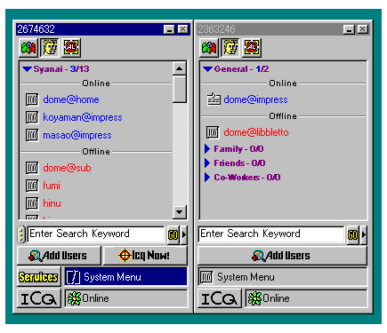
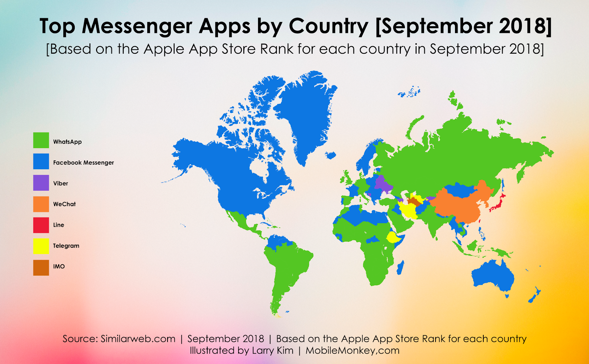

Мессенджеры (от англ. message - сообщение) - программы для мгновенного обмена сообщениями.
Хотя любые компьютерные сети построены на концепции передачи сообщений, это не имеет никакого отношения к мессенджерам.
Мессенджерами называют клиентские приложения, предназначенные именно для ведения текстовых диалогов между людьми.
Причём именно в режиме реального времени. Поэтому первоначальную электронную почту нельзя считать мессенджерами - на заре своего появления письма в электронной почте могли приходить с задержкой до целых суток. Даже сейчас с электронной почтой иногда могут случаться значительные задержки. Электронная почта не гарантирует мгновенного получения писем.
Пока личные или домашние компьютеры были редкостью, в мессенджерах не было особого смысла.
Но с развитием Интернет технологий и распространением персональных компьютеров в каждый дом, стало очевидно, что такой способ общения между людьми является самым простым и удобным в современном мире.
Первым мессенджеров, в привычном нам понимании, считается ICQ, появившийся в 1996 году (и опять в Израиле).
В 90-х годах ни о каких мобильных телефонах ещё не шла речь, поэтому ICQ был разработан как программа для персональных компьютеров. Выглядел он так:
ICQ стал набирать невероятную популярность, и начали появляться различные аналоги и конкуренты, такие как:
У всех мессенджеров, начиная с самых первых, был "статус присутствия пользователя". Этот статут определялся на основе того, открыто ли окно с программой, и показывал, находится ли человек в сети, отошёл он, или нет.
Уже с первых мессенджеров можно было создавать групповую переписку.
Также от первых мессенджеров пошла возможность передачи файлов между пользователями.
Это было, так называемое, старое поколение мессенджеров. Они предназначались только для передачи текстовых сообщений и работы на стационарных компьютерах.
Такие мессенджеры можно считать классическими, потому что все последующие уже имели гораздо больший функционал, и их скорее правильнее относить к Ip-телефонии, чем к мессенджерам.
Сменой поколения мессенджеров послужило появление мобильных телефонов, а именно смартфонов.
В 2007 и 2008 годах появились iPhone и Android, и к чему это привело, всего за 10 лет, мы с вами прекрасно видим.
Особенностью нового поколения мессенджеров является ориентирование на мобильные устройства, а также голосовую и видеосвязь, помимо стандартной текстовой.
За последнее время этих мессенджеров наплодилось огромное количество, но среди основных можно выделить:
На схеме можно увидеть, в каких странах какие мессенджеры наиболее популярны:
WhatsApp является самым популярным мировым мессенджером и насчитывает более 1.5 млрд пользователей по всему миру.
Для использования WhatsApp его необходимо подключить к существующему номеру мобильного телефона.
Facebook Messenger не сильно отстаёт от WhatsApp и имеет аудиторию в размере 1.3 млрд пользователей.
Facebook Messenger предлагает богатую функциональность для проведения маркетинговых кампаний и создания чат-ботов, благодаря чему он хорошо подходит для продвижения рекламы и раскрутки услуг (конечно, это больше актуально к американскому рынку).
Facebook Messenger тесно интегрирован с социальной сетью Facebook, использует общую учётную запись и имеет общие контакты.
WeChat - это главный мессенджер Китая. Им пользуется порядка 1 млрд китайцев, т.е. почти всё население.
Помимо мессенджера WeChat является социальной сетью, а также предоставляет возможность оплаты электронных услуг.
Viber, также как и WahtsApp для работы должен быть подключен к номеру мобильного телефона.
Telegram - интересный мессенджером, ориентированный на обеспечении приватности диалогов.
Сообщения шифруются таким образом, что никто, кроме получателя, не имеет возможности расшифровать содержимое.
Также в Телеграмме большое распространение получили чат-боты.